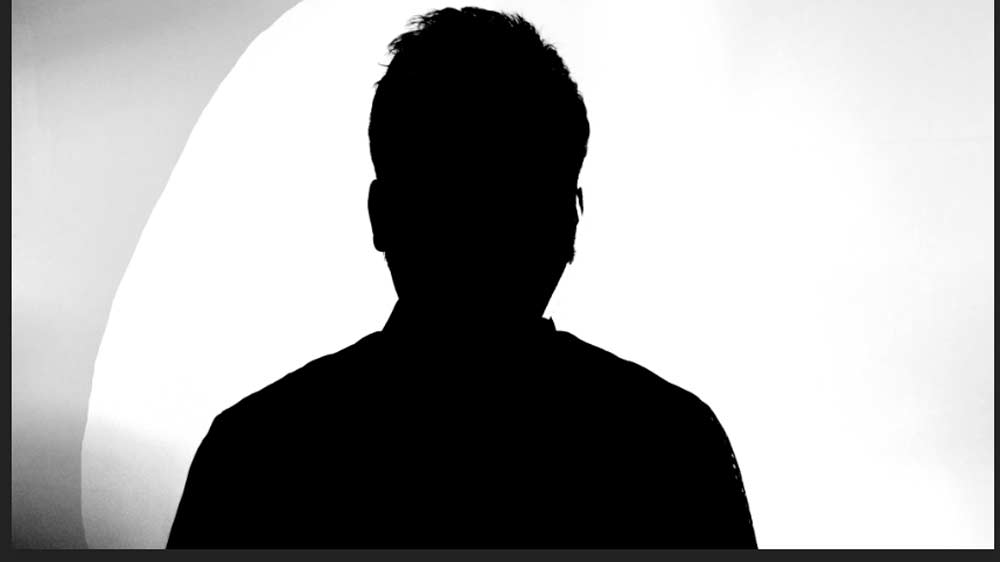

Jako příklad použiji svůj portrét. Vytvořím si skupinu a nazvu ji maska. Jako základ použiji kopii jednoho z barevných kanálů. Přejdu do panelu kanály a najdu si ten, který má největší kontrast mezi objektem a pozadím.
Vyberu si nejkontrastnější kanál a udělám si jeho kopii jako samostatnou vrstvu ve skupině maska.
Nejkontrastnější kanál (vybral jsem zelený) si vyberu pomocí CTRL+A a dám do clipboardu pomocí CTRL+C. Poté kliknu na RGB a vrátím se do vrstev a kliknu na skupinu maska. Pomocí CTRL+V vložím kopii zeleného kanálu do samostatné vrstvy.
Jeden trik navíc: pokud žádný z kanálů není příliš kontrastní, můžete zkusit udělat kopii (úplně nový soubor) stávající fotografie a tu převést do barevného prostoru CMYK a zkopírovat si barevný kanál z této fotografie do původní, která je v RGB. U této fotografie to zrovna ale moc nefunguje.
Barevný kanál kopíruji do vrstev, nevytvářím nový.
Nyní pomocí vrstev úprav úrovně a křivky přidávám na kontrastu, ideálně aby pozadí bylo bílé. Není třeba zacházet až do extrémů, na této fotografii se mi celé pozadí do bílé nepovede převést, budu muset ještě udělat lokální úpravy.
Vpravo je fotografie již světlá až moc, vlevo bych mohl ještě trochu ubrat světlo z pozadí.
Teď ještě udělám lokální úpravy. Začnu vlevo, kde by to chtělo ještě ubrat barvu z pozadí. Lasem si označím levou stranu fotografie a opět použiji vrstvy úprav jako v předchozím kroku. Při vložení nové vrstvy úprav se mi z výběru lasem automaticky udělá maska, kterou si pak můžu zkopírovat na další vrstvy úprav.
Lokální použití vrstev úprav.
Při tvorbě lokálních úprav si můžu trochu pomoci tím, že si vytvořím novou skupinu, na tu aplikuji masku a do této skupiny pak dám vrstvy úprav a vystačím si s jednou maskou, kterou si pak mohu upravit dle potřeby.
Seskupení vrstev úprav pod jednou maskou.
Vše si sloučím pomocí CTRL+SHIFT+ALT+E. Kontury objektu si ztmavím pomocí nástroje ztmavení, nahoře v liště si zašrtnu Rozsah: stíny. Zbytek masky dodělám černým štětcem.
Ztmavení kontur udělám pomocí nástroje ztmavit. Zbytek vezmu ručně štětcem.
Velké plochy začerním štětcem.
Ještě mi zbývá vymazat bílým štětcem pozadí vlevo. Nyní si již mohu zkopírovat pomocí CTRL+A a CTRL+C celou vrstvu s připravenou maskou. Do masky fotografie (s altem kliknu na masku u fotografie a dám CTRL+V). Skupinu maska si skryji.
Masku si otočím pomocí CTRL+I. Ještě mi zbývá domaskovat pravé ucho a tvář. Ve vlastnostech masky si nastavím denzitu na cca 25 % a štětcem doladím masku.